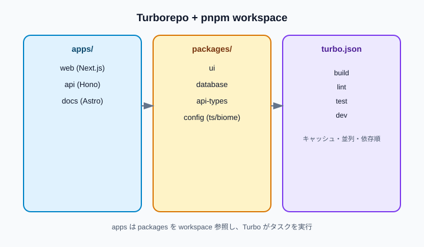

JavaScript / モノレポ
Turborepoを用いたモノレポの構成例
Turborepoは「複数パッケージのビルド・テスト・lintを、依存関係順に並列実行し、結果をキャッシュする」ためのオーケストレータです。2026年時点の実務では、pnpm workspaceでパッケージを束ね、appsにNext.jsやHono、packagesにUI・DB・共有設定を置く構成がよく使われます。
簡潔なQ&A
- Q. Turborepoモノレポの基本形は？
- A. ルートに
turbo.jsonとワークスペース定義（pnpm-workspace.yamlなど）を置き、apps/に実行単位（Web、API）、packages/に共有ライブラリ（UI、DB、型、設定）を分ける形が定番です。 - Q. トレンド寄りのライブラリ構成例は？
- A. pnpm + TypeScript + Next.js（App Router）+ React 19 + Hono + Prisma + TanStack Query + Zod + Biome + Vitest + Playwright + Tailwind CSS v4、といった組み合わせがよく選ばれます。APIの型共有は tRPC か、OpenAPI / Zod スキーマ共有のどちらかです。
- Q. Turborepoとpnpmは何が違う？
- A. pnpmは依存のインストールとworkspaceリンク、Turborepoは
buildやtestなどのタスク実行・キャッシュ・並列化を担当します。役割が違うので、多くのプロジェクトで両方を併用します。

ディレクトリ構成の例
フルスタックWebプロダクトを想定した、よく見るレイアウトです。規模が小さいうちはapps/apiを省略し、Next.jsのRoute HandlerやServer Actionsだけで始めることも多いです。
acme/
├── apps/
│ ├── web/ # Next.js（フロント + BFF）
│ ├── api/ # Hono（独立API、必要なら）
│ └── docs/ # Astro / VitePress（任意）
├── packages/
│ ├── ui/ # 共有Reactコンポーネント
│ ├── database/ # Prisma schema + client
│ ├── api-types/ # Zodスキーマ / 共有DTO
│ ├── typescript-config/ # 共通 tsconfig
│ └── biome-config/ # 共通 Biome 設定
├── turbo.json
├── pnpm-workspace.yaml
├── package.json
└── biome.jsonトレンド寄りの技術スタック例
「今から新規で組む」前提の一例です。プロダクト要件で必ずしも全部は要りません。
| 層 | よく選ばれる選択肢 | packages への置き方 |
|---|---|---|
| パッケージ管理 | pnpm workspace | ルートのみ |
| タスク実行 | Turborepo 2.x | turbo.json |
| フロント | Next.js 15 + React 19（App Router） | apps/web |
| API | Hono（Node / Bun）または Next Route Handlers | apps/api または web 内 |
| DB | Prisma + PostgreSQL | packages/database |
| バリデーション | Zod | packages/api-types |
| クライアント状態 | TanStack Query v5 | apps/web（必要なら小さな hooks パッケージ） |
| スタイル | Tailwind CSS v4 | packages/ui と web で共有 |
| Lint / Format | Biome | packages/biome-config |
| テスト | Vitest（単体）+ Playwright（E2E） | 各 app / package |
ルート設定の最小例
pnpm-workspace.yaml
packages:
- "apps/*"
- "packages/*"turbo.json（タスクの依存とキャッシュ）
{
"$schema": "https://turbo.build/schema.json",
"tasks": {
"build": {
"dependsOn": ["^build"],
"outputs": [".next/**", "dist/**"]
},
"dev": {
"cache": false,
"persistent": true
},
"lint": {
"dependsOn": ["^lint"]
},
"test": {
"dependsOn": ["^build"],
"outputs": ["coverage/**"]
}
}
}dependsOn: ["^build"]は「依存している workspace パッケージの build が先に終わる」という意味です。UIパッケージをビルドしてから web アプリをビルドする、といった順序を Turbo が自動で組み立てます。
ルート package.json（スクリプトの入口）
{
"private": true,
"scripts": {
"dev": "turbo dev",
"build": "turbo build",
"lint": "turbo lint",
"test": "turbo test"
},
"devDependencies": {
"turbo": "^2.0.0"
},
"packageManager": "pnpm@10.0.0"
}packages の切り方
packages/ui
ボタン、フォーム、レイアウトなど、複数アプリで使う React コンポーネントを置きます。ビルドは tsup や Vite library mode がよく使われます。Storybook を同パッケージまたはapps/storybookに置くチームもあります。
packages/database
Prisma の schema と生成された Client をエクスポートします。マイグレーションはこのパッケージのスクリプトに集約し、apps/webやapps/apiは@acme/databaseを import するだけにすると、スキーマ変更の影響範囲が追いやすくなります。
packages/api-types
APIの入出力を Zod で定義し、サーバーとクライアントの両方から参照します。tRPC を使う場合は router 定義をここかpackages/apiにまとめ、web から型安全に呼び出す構成もあります。
packages/typescript-config / biome-config
各 app のtsconfig.jsonやbiome.jsonは、共有設定を extends するだけにします。モノレポでは「設定のコピペ」が最初の負債になりやすいので、早めにパッケージ化しておくと楽です。
apps/web の package.json 例
{
"name": "@acme/web",
"private": true,
"scripts": {
"dev": "next dev --turbopack",
"build": "next build",
"lint": "biome check .",
"test": "vitest run"
},
"dependencies": {
"@acme/ui": "workspace:*",
"@acme/database": "workspace:*",
"@acme/api-types": "workspace:*",
"@tanstack/react-query": "^5.0.0",
"next": "^15.0.0",
"react": "^19.0.0",
"react-dom": "^19.0.0"
}
}workspace:*は pnpm がモノレポ内のローカルパッケージをリンクする記法です。バージョンを手で揃えなくてよいのが利点です。
タスクの流れ（開発時のイメージ）
pnpm installで全 workspace の依存を解決する。pnpm dev（実体はturbo dev）で、変更のあったアプリとその依存パッケージだけ dev サーバーを起動する。- UIを
packages/uiで直すと、web のホットリロード経由で反映される（パッケージのビルド方式次第）。 - CIでは
turbo build lint testを走らせ、キャッシュヒットしたパッケージはスキップする。
よくある設計判断
- APIを別 app にするか: チーム分離やデプロイ単位が必要なら Hono を
apps/apiに。小さく始めるなら Next の Server Actions / Route Handlers だけで十分なことが多い。 - tRPC vs REST + Zod: 同一モノレポで型共有が効くなら tRPC。外部公開APIやモバイルクライアントが別なら OpenAPI 生成や REST の方が無難。
- UIパッケージのビルド: 開発中は TypeScript のソースをそのまま参照（transpilePackages）し、公開用ライブラリにするときだけ dist を出す、という段階的なやり方が現実的。
- Biome vs ESLint: 新規なら Biome 一本化が増えている。既存ルール資産が大きいなら ESLint + Prettier をルートパッケージで共有。
このリポジトリ内の関連ノート
- npm、Yarn、pnpmの違い — workspace とモノレポのパッケージマネージャ選定
- 静的解析と自動整形ツール — Biome をルートで共有する話
- React 19の変更点 — web アプリ側の前提
要点
Turborepoモノレポは「apps = 動かすもの」「packages = 共有するもの」「turbo = タスクの順序とキャッシュ」で覚えると整理しやすいです。トレンド寄りの新規構成なら pnpm + Next.js + React 19 + Prisma + Zod + Biome + Vitest を軸に、APIとUIの境界だけプロダクトに合わせて足すのが現実的です。